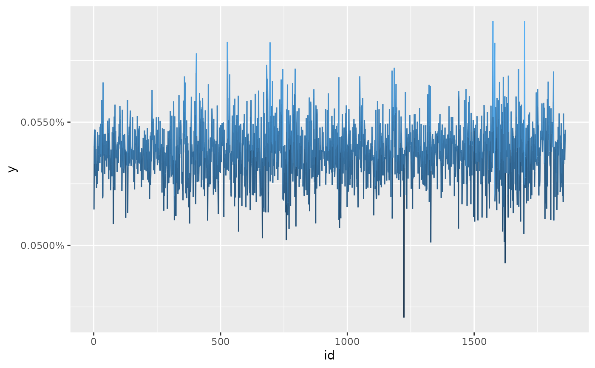

Helper to construct views on relative performance of assets.
Usage
view_on_rank(x, rank)
# S3 method for default
view_on_rank(x, rank)
# S3 method for matrix
view_on_rank(x, rank)
# S3 method for xts
view_on_rank(x, rank)
# S3 method for tbl_df
view_on_rank(x, rank)Arguments
- x
An univariate or a multivariate distribution.
- rank
A
integerwith the assets rank (from the worst to the best performer).
Details
If rank = c(2, 1) it is implied that asset in the first column will outperform
the asset in the second column. For longer vectors the interpretation
is the same: assets on the right will outperform assets on the left.
Examples
library(ggplot2)
# Invariants
x <- diff(log(EuStockMarkets))
prior <- rep(1 / nrow(x), nrow(x))
# asset in the first col will outperform the asset in the second col (DAX will
# outperform SMI).
views <- view_on_rank(x = x, rank = c(2, 1))
views
#> # ffp view
#> Type: View On Rank
#> A : Dim 1 x 1859
#> b : Dim 1 x 1
ep <- entropy_pooling(p = prior, A = views$A, b = views$b, solver = "nloptr")
autoplot(ep)

# Prior Returns (SMI > DAX)
colMeans(x)[1:2]
#> DAX SMI
#> 0.0006520417 0.0008178997
# Posterior Returns (DAX > SMI)
ffp_moments(x, ep)$mu[1:2]
#> DAX SMI
#> 0.0007646772 0.0007646772